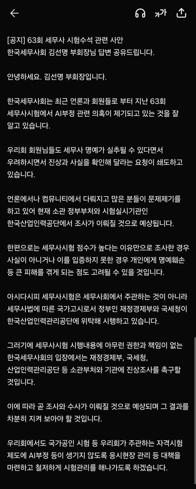

세무사회 입장문
댓글
안경 금지를 합리적 해결책이라고 생각하는게 딱 니 수준인거지 븅신 ㅋㅋㅋ~
너 왜 욕 처먹냐?
이미 시험장에 금지된 수많은 금지 규정이 있음
쁠테 안경 금지가 문제 될 수준 인가?
존나 웃기네
뿔테안경금지가 왜 병신같은데?
내생각에는 괜찮은방법같은데
너는 왜 지나가다 아무대나 욕을 싸고싶었어?
관리하기 편하다는 이유로 무고한 대다수의 안경 착용자들에게 불편을 전가하는게 괜찮아보여? 쟤랑 똑같이 븅신이지 뭐
얇은테 안경을 쓰면 되잖아 그게 무슨 무고한 대다수 어쩌고 나올일이냐 ㅋㅋㅋㅋ
모든 수험생의 안경테 두께를 일일이 자로 재고 뿔테인지 아닌지 판별할 건가? 감독관이 일일이 검사하기 시작하면 시험 운영 자체에 엄청난 행정 낭비가 발생하고 혼란만 가중된다 멍청한 소리 그만하고 꺼져 그냥 ㅋㅋ
근데 해답 못찾으면 뿔테나 심하면 안경 착용 자체를 금지하게 될 수도 있다고 봄
네 말대로 현실적으로 감독관이 일일이 검사하고 매시간마다 반복하고 그럴 수가 없음
앞에 놈이나 이놈이나 같은 수준임ㅋㅋ
차라리 시험전에 안경 검사하라고 하면 납득이라도 감ㅋㅋ
시험보고싶으면 안경새로 맞춰라 이거임?
그게 말이 된다고 생각하는건가 ㅋㅋ
아니 시력 나쁘면 압축을 존나해서 알만 10~15만원이고 안경값이 최소 15~25만원대여서
수험생한테 당연히 부담되는건데
그냥 시험주관사가 초음파 세척기 대여하는 업체한테 시험날에만 대여해서
안경들 초음파 돌리는게 더 현실적인거임
전형적인 군대식 일처리 아님?
이게 괜찮다고?
옷에 컨닝페이퍼 숨길수 있으니 옷금지 <-딱 이정도 해결법 ㅋㅋ
일반적 행동자유권과 과잉금지의 원칙에 대해서 찾아봐라 무식한 녀석...
근데 이미 시험장에 수 많은 제한이 규정 되어 있는데?
그건 착한 규정 임?
뿔테 농가 살려내라!!
동일한 시험지 그대로 주고 못풀어도 취소시킬 방법은 없음. 객관식은 찍어서 맞은거다 주관식은 그때 생각나는대로 썼고 지금은 기억 안난다 소리하면 그만이니 cctv에 스마트글래스란게 확인되면 모를까
현장적발 못했으면 걍 이미 늦었다봐야할듯
자기 자백없으면 저어얼대 뭔 조치못하지
썼냐 안썼냐를 어떻게 검증할거여 ㅋㅋ 이미 목걸이는 쥐어졌는데 ㅋㅋ
8대 전문직중 하나인데 국가가 그렇게 병신은 아닐꺼야... 병신이라면 세무사는 이제 전문직 이미지 박살이지 뭐
그렇다고 법 위에 있는건 아니잖아. 어제일도 아니고 반년전 일이라며
그 당시에도 못찾았던걸 6개월 지난 다음에 입증하겠단게 난 어렵다고 봐
이게맞음 ㅋㅋㅋㅋㅋㅋㅋ 어떻게 증명할거냐 검증이 안되는데
결과나올때까지 중립기어!
솔직히 99퍼 ai같은데 현장적발 못했는데 지금와서 뭘 할수있는데
이게맞음 이제와서 뭘 할수있는데 뭐 재시험이라도 보라할거야? 누구맘대로? 그게 형평성에 맞는 행동인가?
ㅇㅇ 법적으로는 못 함
근데 뭐 우리보다 똑똑한 세무사들이 지금 자기 밥그릇 날라가게생기고, 라이센스 가치가 바닥나게 생겼는데 우리들보다 훨씬 더 이악물고 철저하게 조질거니깐 걱정마
4월하고 7월에 치뤄진 시험을 이제사 조사한다고?
정황말고는 아무것도 없는데?
뭐 방법은 그사람들이 찾지않을까, 저거 고시 주관하는사람들 입장에서도 시험 근간이 흔들리게 생겨서 방법 찾아야할거임 ㅋㅋ
사후약방문말고는 없지
막말로 고점받았다고 '너 왜 고점이야? 조사받자' 이러면 이거 인권유린 아니냐?
현장에서 적발하면 현행범이기라도 하지 이미 다 지나간걸 어찌;;;
제대로 대처하지 못한 기관의 문제지
증거도 없는데 재시험 치라는것도 형평성에 어긋나고
당사자가 거기에 응할 의무도 없고 존나 골치아프긴 할듯
평생 의심 상태의 찝찝한 오점으로 남는건가
뭐 근데 사짜직업의 종말이 오긴한거같네
아득바득 기득권 붙잡으려 해도 대세를 거스르긴 힘들듯
검증을 어떻게 할 것인가...
곧 있을 수능은 어떻게 할 것인가
수습 세무사들 이제 곧 연수원 가야하는데 연수원가서 만점 받으면 되긴하는데 그건 뭐 쉽겠지
그나저나 걔 하나뿐이었겠냐는 거지.
그리고 대망의 수능은 어쩔 거냐구.
이의제기해서 달달볶았는데 만일 입증못하면 그 책임은 어느 개인이나 기관에서 지려나?
이제 곧 수능까지 치는데 ㅋㅋㅋㅋㅋ뭔가 ai안경이슈 한번더 터질꺼같음 ㅋㅋㅋㅋ
카시오 아날로그 시계가 일명 수능 시계인 것처럼 앞으로 수능 안경, 국가가 지정한 수험용 안경도 나오겠구만…
검증 못한다 한들 낙인 찍혀서 세무사 사회에서 살아남지도 못할 것인데.. 이렇게 된 이상 진짜 순수 실력으로 전체 1개 틀린 거면 억울해서 당사자가 입증한다고 난리치겠지 뭐
합리적인 해결책 얘기 했는데? ㅋㅋㅋ 눈깔만 븅신이 아니고 걍 뇌까지 븅신인가?? 시력이 떨어진게 아니라 지능이 떨어져서 안경 쓰고 다니냐?